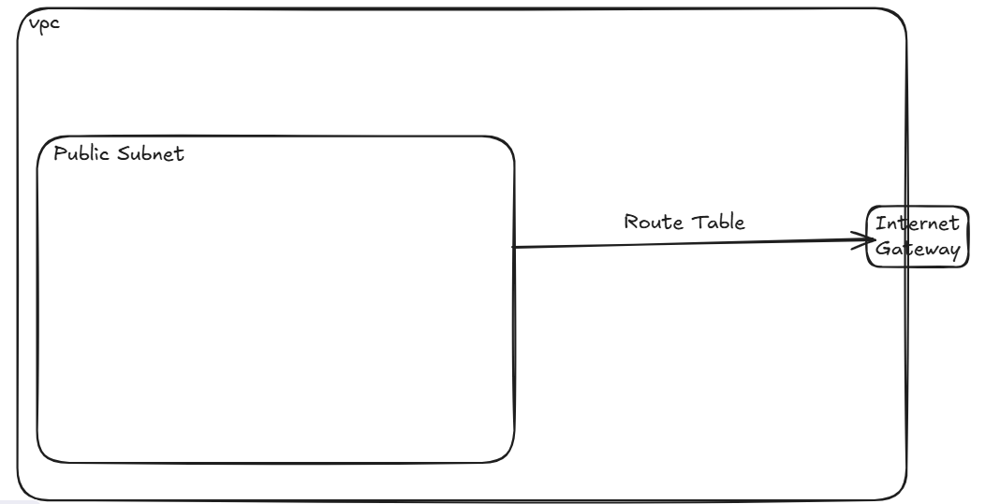
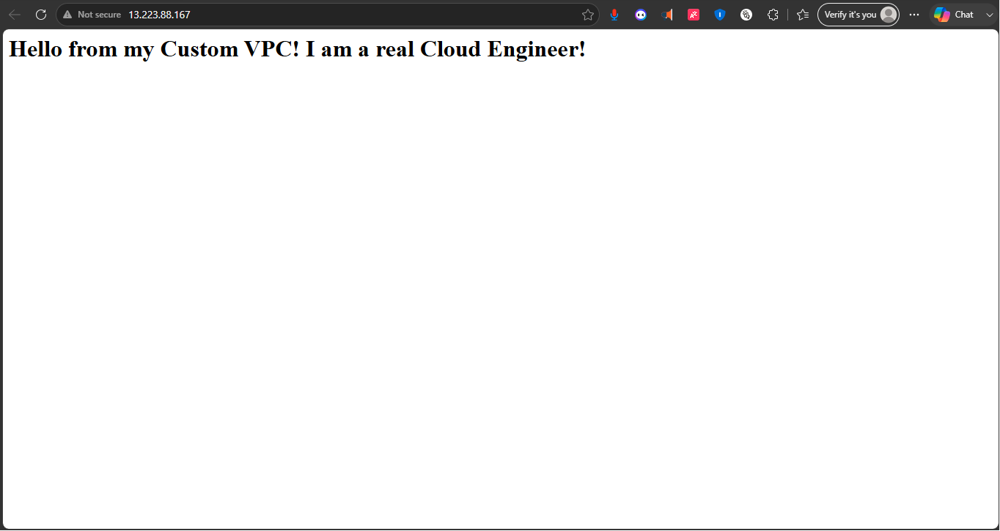

Projects / Project 02
Custom VPC and EC2 web server
Instead of using the default network, I built one from scratch and deployed a web server into it that configures itself on first boot.
The problem
Default AWS networking hides how traffic actually reaches a server. I wanted to understand each piece (address space, subnet, gateway, route and firewall) by building them myself.
Architecture

How I built it
- Created a VPC (10.0.0.0/16) and a public subnet (10.0.1.0/24).
- Created and attached an internet gateway, and added a 0.0.0.0/0 route to it in the route table.
- Created a security group that allows inbound HTTP on port 80 only.
- Launched a t2.micro Amazon Linux 2023 instance into that subnet with a user data script that updates the OS, installs Apache, starts it and writes a custom index.html.

Engineering decisions
Bootstrap with user data
The server configures itself at boot, so it is reproducible and needs no manual SSH session.
Open only what is needed
The security group allows port 80 and nothing else, treating the firewall as an allow-list.
Issue I hit and fixed
Site "not loading" over HTTPS
Cause: the browser defaulted to HTTPS (port 443) but the security group only allowed port 80, so the connection timed out.
Fix: used http:// explicitly. It confirmed that security groups filter strictly by port and that browsers assume HTTPS by default.
Limitations
A self-directed lab: a single instance in one subnet, so no redundancy, no TLS, no live endpoint published. Project 5 addresses redundancy with two AZs, a load balancer and an Auto Scaling group.